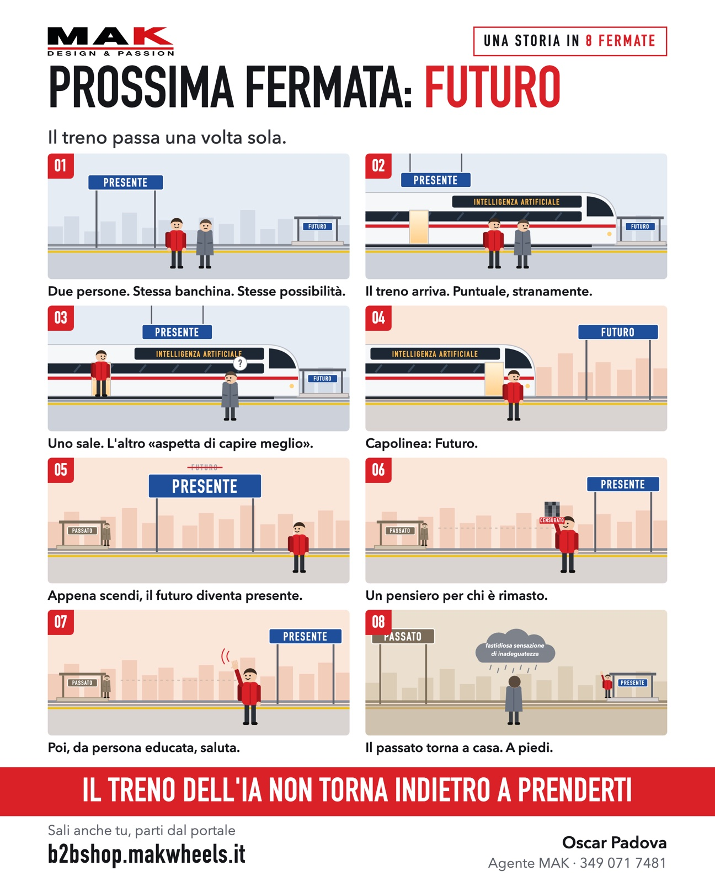

Il treno passa una volta sola.
Due persone. Stessa banchina. Stesse possibilità.
Il treno arriva. Puntuale, stranamente.
Uno sale. L'altro «aspetta di capire meglio».
Capolinea: Futuro.
Appena scendi, il futuro diventa presente.
Un pensiero per chi è rimasto.
Poi, da persona educata, saluta.
Il passato torna a casa. A piedi.
Tu da che parte della banchina stai?
Tocca a destra per andare avanti, a sinistra per tornare indietro.
Web app, automazioni, locandine animate come questa: le faccio da solo con l'intelligenza artificiale. Ci vuole meno di quanto pensi.
Tienila premuta per salvarla o girarla a un collega.
